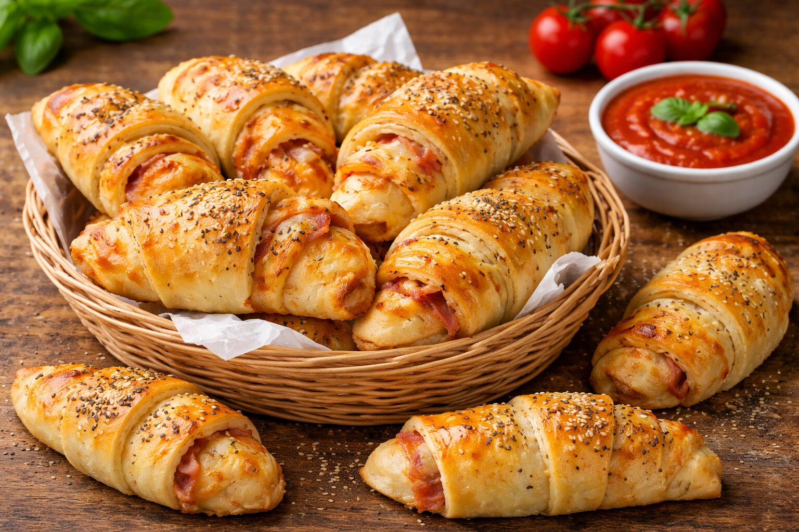

Suroviny
- 1 kg hladkej alebo výberovej múky
- 200 ml oleja
- 0,5 l vlažného mlieka
- 2 plné lyžičky kyslej smotany alebo gréckeho jogurtu
- 2 čajové lyžičky soli
- 1 kocka kvasníc
- 2 žĺtka
- Trochu cukru
Plnka
- 0,5 kg jemnej salámy (zamraziť pred krájaním)
- 300 g syra
- 1/2 balenia pizza korenia
- Kečup na potretie
Postup
- Všetky ingrediencie na cesto zmiešame a necháme vykysnúť.
- Rozdelíme na 8 bochníkov, každý bochník vyvaľkáme a plníme salámou a syrom.
- Potrieme kečupom a posypeme korením.
- Pečieme 15–15 minút na 170 °C (1 plech = 16 kusov).